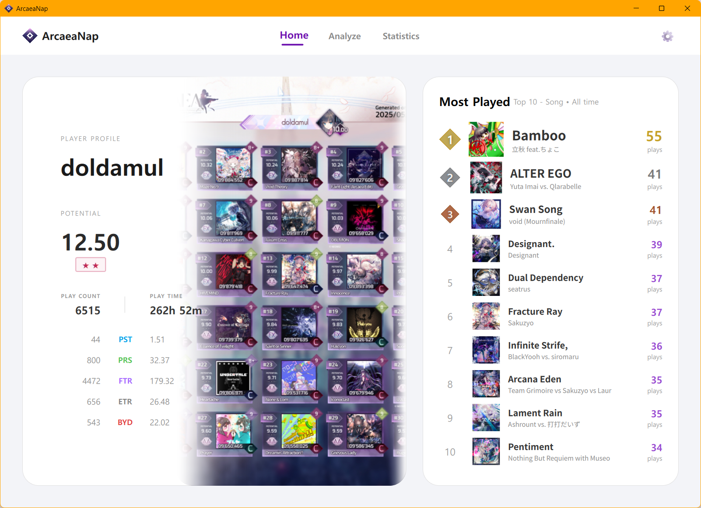
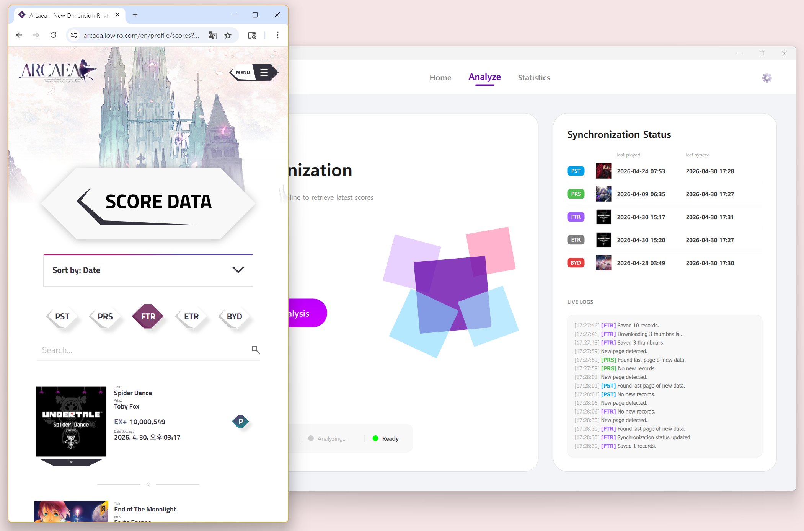
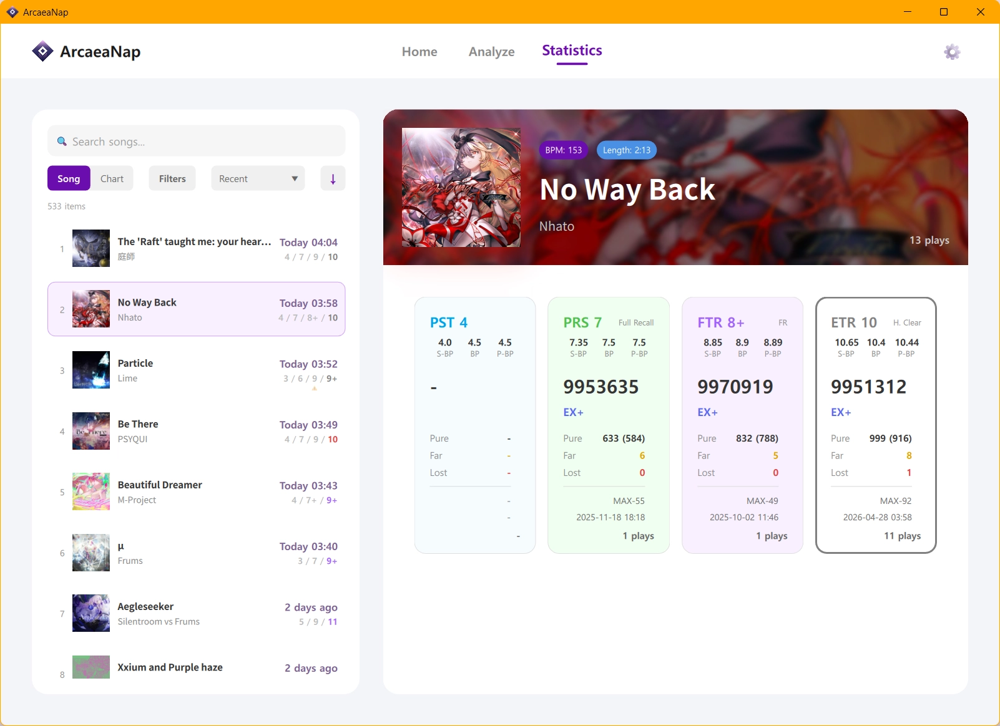

ArcaeaNap is a fast and convenient Arcaea play record viewer. It saves Arcaea Online data to your local PC and provides your personal activity records, such as total play time and play counts per song, through an intuitive UI.

Check your play time and top play rankings at a glance.

Save your Arcaea Online play records directly to your local PC.
* Requires an account with an active Arcaea Online subscription.

Quickly explore records stored on your PC with filtering, sorting, and search functions.